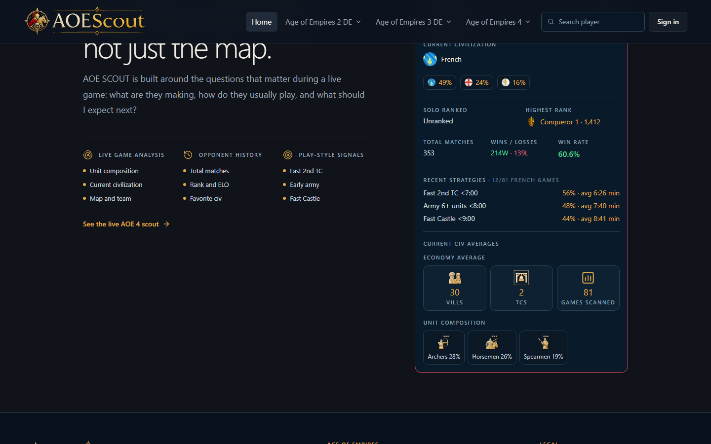
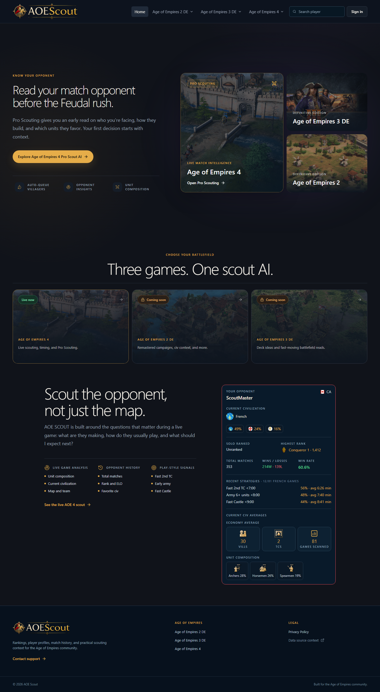

Leaderboards
Browse ranked 1v1 and team ladders, plus game-specific modes such as Random Map, Empire Wars, Deathmatch, and Age of Empires IV console rankings. Open any available player directly from the standings for more context.
Project showcase · Age of Empires
AOE Scout brings Age of Empires II DE, III DE, and IV leaderboards, lobbies, civilization statistics, comparisons, cheats, player profiles, and opponent intelligence into one practical experience.
What the app does
AOE Scout helps Age of Empires players answer three match questions quickly: who am I facing, how do they usually play, and what should I prepare for next?
The product connects a public web experience with an optional Windows companion for live scouting and Auto-Queue villagers. This repository is deliberately only a visual, front-end showcase.
Explore AOE Scout
Every feature keeps the terminology and data of its game while following one consistent interface across Age of Empires II DE, Age of Empires III DE, and Age of Empires IV.
Browse ranked 1v1 and team ladders, plus game-specific modes such as Random Map, Empire Wars, Deathmatch, and Age of Empires IV console rankings. Open any available player directly from the standings for more context.
Follow matches currently in progress or browse available multiplayer rooms with useful details about players, maps, settings, and lobby capacity.
Understand the current meta through civilization pick rates, win rates, match volume, ranked modes, maps, and the filters available for each supported game.
Place units side by side to understand cost, role, movement, durability, attack, armor, range, and other game-specific attributes without working through an oversized spreadsheet.
Compare current and highest ranks, rating or ELO, wins, losses, win rate, total matches, favorite civilizations, and available recent performance in one focused view.
Review rank summaries, solo and team performance, match history, civilization preferences, recent games, and match details supported by each title.
Turn a profile into a quick pre-match read with ranks, ELO, recent strategy timings, economy averages, likely unit composition, and frequently played civilizations.
Choose the Town Center and Queue Villager shortcuts and an interval. The optional Windows companion presses those selected keys at the scheduled time; it does not inject into or modify the game.
Find searchable, plain-language cheat references for Age of Empires II, Age of Empires III, Age of Empires IV, and their Definitive Edition pages where applicable.
Use the website for discovery, statistics, comparisons, and profile research, then bring time-sensitive scouting and shortcut assistance closer to the match with the optional Windows companion.
Core product surface
The opponent intelligence card is the shared visual language across the homepage, Pro Scout AI, and the Windows app.

Design principles
Labels explain the unit counts and timing averages so the information is useful to new and experienced players.
Cards, badges, spacing, colors, and typography stay aligned across web surfaces and the Windows companion.
Rank performance and recent strategy patterns lead to a decision instead of adding another dashboard to study.
Product screenshots

“Your first decision starts with context.”